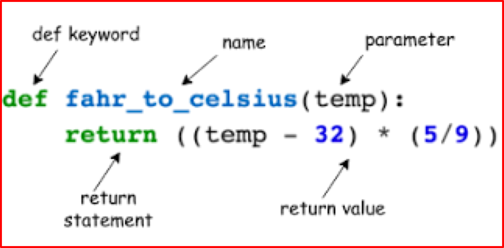
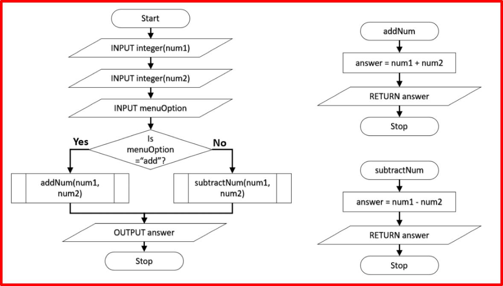
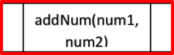
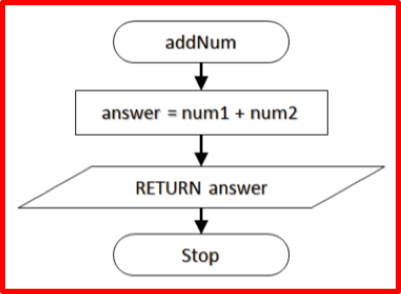
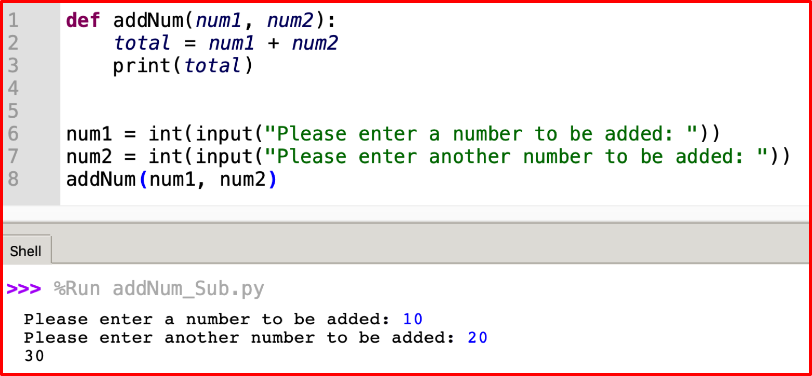
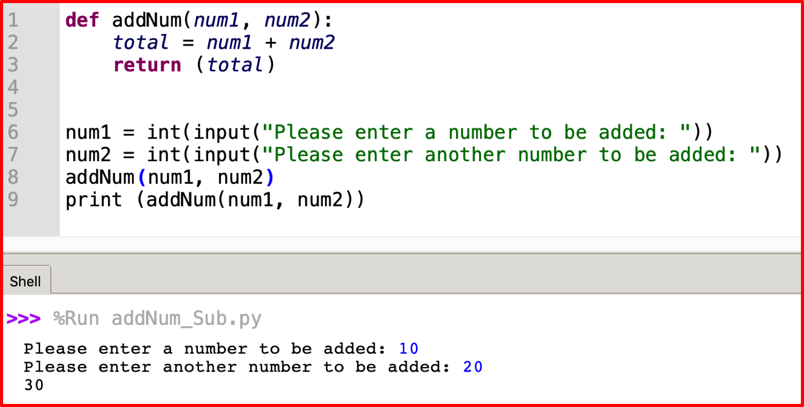
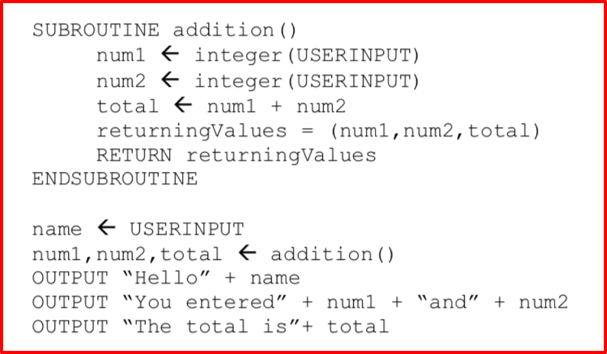
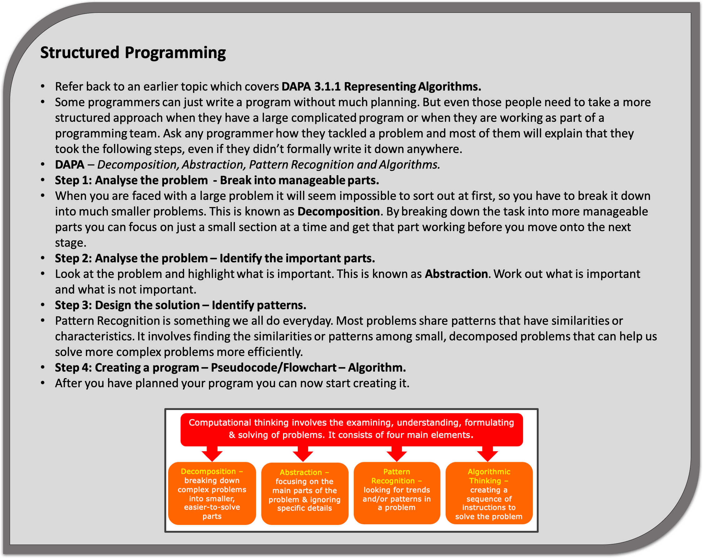

3.2.7 Subroutines (Procedures and Functions)
Table of Contents
- 1. Subroutines - Procedures and Functions
- Learn It: What are subroutines?
- Learn It: Advantages of using Subroutines in programs
- Learn It: Passing Data within Programs
- Learn It: Returning values from a Subroutine
- Badge It: Coding Challenge
- Learn It: Local and Global Variables
- Learn It: Functions and Procedures
- Try It: Functions
- Try It: Procedures
- Learn It: Structured Programming
- Badge It: Exam Questions
- Badge It: Exam Question and Coding Challenge
1 Subroutines - Procedures and Functions

Learn It: What are subroutines?
Subroutines - In computer programming, a subroutine is a sequence of program instructions that performs a specific task, packaged as a unit. In different programming languages, a subroutine may be called a procedure, a function, a routine, a method, or a subprogram. The generic term 'callable unit' is sometimes used. (Source Wikipedia.org)
Parameters - Parameters or arguments are pieces of data that are passed into a subroutine in order for that subroutine to correctly function. In this example: def displayTotal(total): 'total' is a parameter that will be passed to the 'displayTotal' subroutine. Multiple parameters can be managed using commas, for example: def displayTotals(total1, total2, total3, etc)
- Subroutines are
sequences of instructionsthat perform a specific task. It may returnoneormore values, but does not have to. - It may be easier to think of them as
mini-programswithina large program. - Subroutines consist of
modules of codethat perform different tasks. - If these tasks are repeated throughout the program, they can be
written as subroutines. - Each subroutine is given a
unique nameso that it can becalledandexecuted quicklythroughout the program, without having to write the code again. - This
reducesthesize of the code, making theprogrammorelogicalandeasiertoreadandmaintain. - Let's look at an example of using subroutines:
 Step 1
- Here the main program (shown in the flowchart on the left, beginning with the word “Start”) asks the
usertoinput two numbers. - It then asks them to select an option from a
menu. - If they enter the word “add”, it will run a subroutine called
addNum(The smaller flowchart on the top right), if they enter anything else it will run thesubtractNumsubroutine (bottom right). - Let's look at the
subroutine boxin the main flowchart first:
 Step 2
- We can see the name of the subroutine has been defined along with
the variables;
num1andnum2. - This means that the addNum subroutine is going to
use the valuesofnum1andnum2and so has beenpassedthese values. - Sending variables to a subroutine is known as =passing the variables.
Step 3
- We can now look at the
addNum subroutineflowchart.

- This subroutine will
add togetherthenum1andnum2variables andstorethese in a new variable calledanswer. - It will then
returnthe variable answer back to themain menu. - It will then go back to the
main menu, once the addNum subroutine has been completed, where it will be able todisplay the answer variable. - If we had
not returnedtheanswervariable back to the main menu, it wouldnot be able to displaytheanswerin the output as the main program on its own has not defined the answer variable and it does not know what it is.
Learn It: Advantages of using Subroutines in programs
Advantages of using Subroutines
- Breaking down or decomposing a
complex programming taskinto smaller sub-tasks and writing each of these assubroutines, makes the problemeasier to solve. - Subroutines can be used
several timeswithin a program. - It
savesthe programmertimeas it reduces the amount of code that needs to be written or amended by allowing you toreuse codewithout having towrite it again. - If you are working as part of a team you can divide a large program into smaller sections and allow individuals to simultaneously work on those sections.
- It makes the code easier to read if you use sensible subroutine labels as the headings tell the reader what that section of code is doing.
- By reducing the amount of repeating tasks you also reduce the risk of
introducing errorsin a program. - Easy to maintain as each
sunroutinecan betested separately.
Learn It: Passing Data within Programs
A parameter is a variable that is “passed” to a subroutine.
Using Parameters to pass data within Programs
- A
parameteris avariableused in a subroutine torefer to datathat is inputted into the subroutine. - If a subroutine
requires a valuethat has beenusedin another part of the program, then thisvariablehas to be “passed” to thesubroutine. - You can have
more than oneparameterpassinginto a subroutine at a time.

- This example demonstrates how to use more than one parameter to be
passedinto our subroutine. - In this case
num1andnum2are variables inputted by the user in the main program. - Once the variables have been inputted, the
addNum subroutineis called and thetwo parameters(num1 and num2) arepassedto that subroutine so they can be used.
Learn It: Returning values from a Subroutine
A parameter is a variable that is “passed” to a subroutine.
Returning Single Values
- We can alter the previous code example and instead of
outputtingthetotalas part of the subroutine, we canuse the variablein the main program or even in another subroutine topassthatvalue backinto the main (calling) program as shown below:
 Returning Multiple Values
- We can return
more than one valueback to themain (calling) program, however you need tocreatesomething called atuple. - A tuple is a
short listthatholdsvalues temporarily. - The following pseudocode example, returns the numbers and the total back to the main program.

- Here
num1,num2andtotalhave beencombinedin the subroutine into atuplecalledreturningValueand this is retuned to the program using the linenum1,num2,total ← addition(). - This will only work as long as the
data is presentedin thesame orderas itappearsin thetuple. - The values that are being
returnedaregrouped in a tupleand thenusedin themain program, once they have been returned in the same order as the tuple.
Badge It: Coding Challenge
Silver - Return values from a subroutine
- Using the Trinket below and the pseudocode above, create a a working Python program. (4 Marks)
Upload to Fundamentals of 3.2 Programming - 3.2.7 Subroutines (Procedures and Functions): Silver on BourneToLearn
Learn It: Local and Global Variables
Global Variables - A variable that is declared in the main program.
Local Variable - A variable that is declared and only used in one subroutine.
Using Local and Global Variables within Programs
- Subroutines may declare their own variables, called
local variables, and that local variablesonly existwhile in thesubroutine executingand areonly accessiblewithin the subroutine. - Global variables are
declared outsideany function and they can be accessed on any function in the program. - Local variables are
declared insidea function and can only be used inside that function. - It is therefore
possibleto havelocal variableswith thesame nameindifferent functions.
Why use local variables?

- The example shown above,
num1andnum2areglobal variables, as theycan be used anywherein theprogramorsubroutinesas long as they have been passed to the subroutines as parameters. - However,
userNumisonly used withinthechangeNumbers subroutines, so is alocal variableas it isnot used anywhere else. - As soon as the
changeNumbers subroutinehasfinished runningthe data stored inuserNumwill be deleted.
Advantages of using Local Variables
- Using local variables in a subroutine is good practice because it keeps the subroutine self-contained.
- This subroutine can then be used in any program and there is little chance of confusion over which variable names in the main program might conflict with similar names used in the subroutine.
- Another advantage is that the program would be easier to debug and maintain.
- Local variables save memory as the space used by local variables is freed up when the subroutines have finished.
Learn It: Functions and Procedures
Functions and Procedures
- There are two different types of
subroutinesthat we mainly use:Functions.Procedures
- Functions
return values backto the main program and proceduresdo not return a valueback to the main program. - From the previous example program,
addNumandsubtractNumareboth functionsandnot proceduresas they bothreturn valuesback to the main menu.
Try It: Functions
- Look at the following trinket windows, which
demonstratethe use offunctionstoreturn valuesthat are thenusedin the main program. - In Python code the subroutines are defined
BEFOREthe main program. - Follow through the main program and following the subroutine this is known as
“calling”a subroutine.
- The following code demonstrates another example of how a
functioniscreatedandcalledin the main program:

Try It: Procedures
- Look at the following trinket windows, which
demonstratethe use ofproceduresbeingpassedparameters (values) that are then used in the main program. - In Python the subroutines are defined
BEFOREthe main program.
Learn It: Structured Programming
Structured Programming - Structured programming (sometimes known as modular programming) is a subset of procedural programming that enforces a logical structure on the program being written to make it more efficient and easier to understand and modify. Structured programming frequently employs a top-down design model, in which developers map out the overall program structure into separate subsections. A defined function or set of similar functions is coded in a separate module or submodule, which means that code can be loaded into memory more efficiently and that modules can be reused in other programs.

- A structured programming approach is one which has the following
characteristics:
- It uses a modularised approach. This means that it uses subroutines to break down the program into manageable chunks of code.
- Each subroutine should have a clear, well documented interface (parameters and return value).
- It just uses the constructs of; sequence, selection and iteration.
- Note, that the term subroutine interface refers to the number, type and order of the parameters that appear in the subroutine header, and the type of the return value.
Advantages of Structured Programming:
- The structured approach has the advantages of using subroutines listed above.
- By following a four-step approach, you will have planned your solution and there should be no surprises when you start to develop the solution.
- You know the variables you are using and you know about the processes that each subroutine needs to perform and how they link together.
- It also uses just three or four programming structures making the
program quite easy to:
- Understand.
- Debug.
- Maintain.
Badge It: Exam Questions
Gold - Answer the following questions:
- What is a subroutine? (1 Mark)
- What is the difference between a procedure and a function? (2 Marks)
- When writing pseudocode or Python code, where should the subroutines be put, above or below the main program? (2 Marks)
Upload to Fundamentals of 3.2 Programming - 3.2.7 Subroutines (Procedures and Functions): Gold on BourneToLearn
Badge It: Exam Question and Coding Challenge
Platinum - Exam question/Code Challenge
- The function roll(n) simulates the outcome of one random roll of
an n-sided dice. E.g. roll(6) will randomly return either
1,2,3,4,5 or 6.
- a) Noel has declared a local variable inside the function. Explain two differences between local and global variables? (4 Marks)
- b) Noel wants to use his function in a dice game where two identical dice are rolled at the same time.
- i) The player can choose the number of sides that the dice have.
- ii) The player's score is the number of rolls it takes until both dice have landed on the same number.
- iii) Write a sub-program that takes the number of sides of the dice as a parameter and returns a player's score. (5 Marks)
Upload to Fundamentals of 3.2 Programming - 3.2.7 Subroutines (Procedures and Functions): Platinum on BourneToLearn